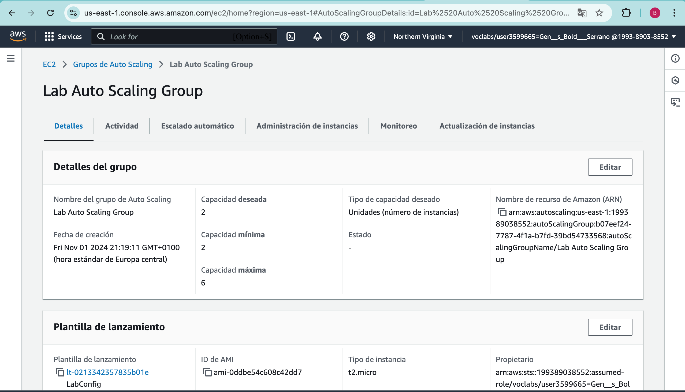
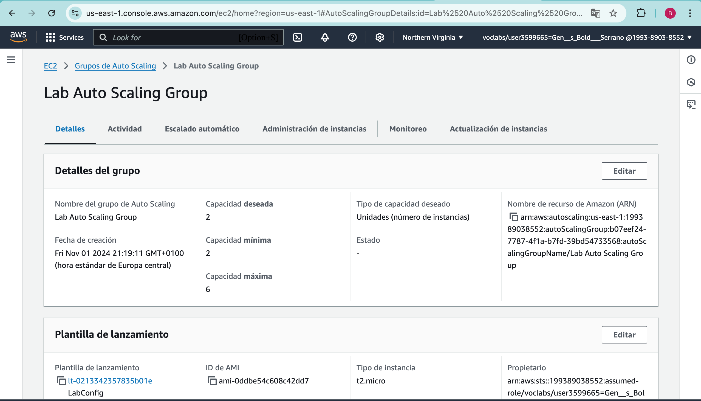

Pregunta 2
| Servicio | Descripción |
|---|---|
| EC2 (Elastic Compute Cloud) |
Permite crear máquinas virtuales para ejecutar trabajos en la nube. Su creación es rápida y escalable, permitiendo aumentar la potencia de ejecución según sea necesario. |
| RDS (Relational Database Service) |
Permite crear y administrar bases de datos relacionales en la nube, con automatización de tareas. |
| S3 (Simple Storage Service) |
Proporciona espacio de almacenamiento escalable en la nube, con alta disponibilidad y seguridad de los datos. |
| EBS (Elastic Block Store) |
Es un disco duro virtual que conecta imágenes de EC2, permitiendo el almacenamiento seguro de datos incluso cuando el servidor no está activo. Ideal para bases de datos y almacenamiento de información. |
| VPC (Virtual Private Cloud) |
Es el espacio privado del usuario en la nube, que permite crear una red virtual para definir recursos como imágenes de EC2 y bases de datos, controlando el acceso y gestionando permisos de los usuarios. |
| CloudWatch | Servicio de monitoreo para recursos en AWS que ayuda a supervisar el rendimiento y el estado de aplicaciones y servicios. Permite configurar alertas para detectar fallos o problemas. |
| Auto-scaling | Función que ajusta automáticamente la infraestructura en función de la demanda. Permite añadir o reducir recursos según el tráfico, optimizando rendimiento y gasto sin intervención manual. |
| Route 53 | Servicio de gestión de nombres de dominio en AWS. Traduce nombres de dominio en direcciones IP y ofrece balanceo de carga para garantizar el funcionamiento fluido del sitio web. |
| Lambda | Permite ejecutar código sin gestionar servidores. Ejecuta funciones automáticamente en respuesta a eventos y solo cobra por el tiempo de ejecución, ideal para aplicaciones con respuesta rápida. |
| Comprehend | Permite extraer información de grandes volúmenes de datos textuales y obtener conocimiento automáticamente mediante inteligencia artificial. |
| RedShift | Servicio para analizar grandes volúmenes de datos con velocidad y potencia, similar a una base de datos tradicional pero con mayor escalabilidad e integración con otros servicios de AWS. |

-
¿Están todos los servicios correctamente ubicados?
Los servicios como ECS, RDS, ALB, y los logs de S3 están bien ubicados para garantizar seguridad, monitoreo y buena disponibilidad. -
¿Por qué no se usa EC2 y se usa ECS? ¿Diferencias?
Se usa ECS porque, a diferencia de EC2, permite gestionar contenedores de manera más eficiente y con menor carga administrativa. EC2 requiere un control manual mayor sobre la infraestructura. -
¿Cuántas redes privadas hay?
Hay 2 redes privadas, una en cada zona de disponibilidad para garantizar el aislamiento y seguridad de los recursos. -
¿En cuántos CPDs se ubica el servicio?
El servicio está desplegado en dos centros de datos (CPDs) o zonas de disponibilidad para asegurar la tolerancia a fallos y la alta disponibilidad.


 
